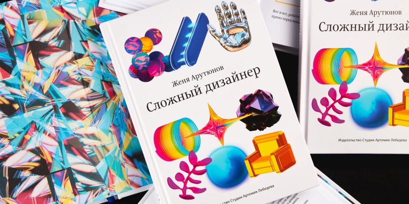
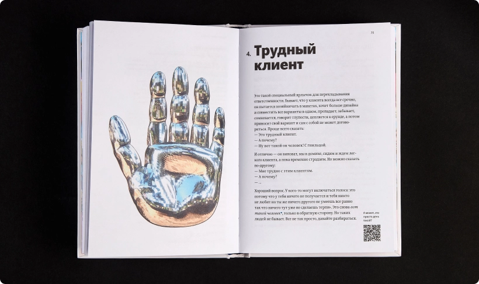

Книга «Сложный дизайнер»
Жени Арутюнова

вдохновение

айдентика
Pentagram
Pentagram — крупнейшая в мире независимая консалтинговая компания по дизайну. Фирма принадлежит и управляется 24 партнерами, каждый из которых является лидером в своей индивидуальной сфере.


«Сложный дизайнер» — книга не о дизайне. Точнее, она о дизайне, но не в привычном для всех смысле — в ней нет основ композиции, правил и упражнений.
Эта книга для бунтарей: тех, кто действует не по шаблону, задает неудобные вопросы и договаривается по-своему там, где принято соглашаться. И еще для тех, кто хочет этому научиться, только не понимает как.
«Сложный дизайнер». Обложка
Эта книга для бунтарей: тех, кто действует не по шаблону, задает неудобные вопросы и договаривается по-своему там, где принято соглашаться. И еще для тех, кто хочет этому научиться, только не понимает как.
Автор рассказывает и о высоком — культуре мышления, коммуникации, лидерства, — и о неизбежной рабочей рутине. Например, о том, почему важно научиться «крутить пружинку». Или зачем всегда брать как можно больше денег. Или как строить прочный дизайн.
Это не готовые рецепты, а обстоятельные рассуждения: почему что-то не складывается и как перестроить работу, чтобы она получалась и радовала. Причем советы одинаково хорошо подходят дизайнерам, редакторам, менеджерам, разработчикам и другим творческим ребятам.
«Сложный дизайнер». Внутренние страницы
Я думаю, что дизайн — это шар. Какие-то вещи на поверхности, а какие-то на глубине.
На поверхности у всех беджи — «UI/UX-дизайнер», «продуктовый», «джуниор», «мидл». Здесь проходят курсы 4D-генеративной-бигдата-машинленинг-айдентики, изучают тренды и лайфхаки.
Здесь всегда все понятно. Это царство определенности, простых ответов и правил. Здесь обожают карго-культ: «сделаем как у них, да и все». Здесь высокая конкуренция, надо как-то пробиваться. И здесь нельзя усложнять, а то работа встанет.
На глубине — тишина. Здесь мало людей, много доверия и сотрудничества. Здесь нет границ между профессиями и должностями. Здесь задают хорошие вопросы, ищут закономерности, правду, конгруэнтность и эмергентность (и того, кто объяснит эти слова). Здесь много читают и делятся наблюдениями, ценится качество мысли.
На глубине неопределенность — это ок, здесь нормально не знать, нормально ошибаться. Здесь не усложняют простое, но и не упрощают сложное.
Моя книга — про глубину. Я не призываю залечь на дно раз и навсегда — никому не нужны идеи без воплощения, всем плевать на умников, не умеющих взять и сделать. Но на глубине можно искать сокровища — неочевидные вопросы и элегантные решения, свое отношение к любым проблемам. А на поверхности — вдохновение, ресурсы и инструменты, чтобы делать.
«Сложный дизайнер». Внутренние страницы. Нажмите, чтобы пролистать галерею
Поделиться статьей